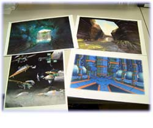
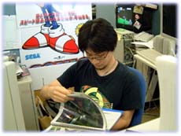

|
■プロフィール■ 入社当時、特に背景をやりたい訳ではなかったが『バーニングレンジャー』で 背景を担当してみて世界観の構築が面白いと感じるようになる。 その後『ソニックアドベンチャー』でも背景パートをこなし『ファンタシースターオンライン』では ２ラインの背景班のうちの１ラインを統括し現在に至る。 |
■今回『ＰＳＯ』での担当個所、業務内容を教えてください。
 主に森面から坑道面までの背景担当です。
北村が担当しているチームは３人ですが、僕はみんなが出したイメージを一つにまと
めたり、アイデアスケッチをいかに３D化するか決定していました。
全体の様子を見ながらクオリティーとポリゴン数、制作時間の調整を行っていたので
すが、最終的にはチームにもう一人増やしてもらってデザインの締め切りになんとか間に合いました。
あとの業務内容としては、プロジェクトが終わる間際に他の人に迷惑掛けながらムービーの製作にもあたりましたね。
主に森面から坑道面までの背景担当です。
北村が担当しているチームは３人ですが、僕はみんなが出したイメージを一つにまと
めたり、アイデアスケッチをいかに３D化するか決定していました。
全体の様子を見ながらクオリティーとポリゴン数、制作時間の調整を行っていたので
すが、最終的にはチームにもう一人増やしてもらってデザインの締め切りになんとか間に合いました。
あとの業務内容としては、プロジェクトが終わる間際に他の人に迷惑掛けながらムービーの製作にもあたりましたね。
|
■担当された世界観のコンセプトとは？
 『PSO』はSFファンタジーですが、基本は科学なのであまりファンタジーは表に出し
ていません。
科学が発展しすぎていて、普通の人には科学か魔法か区別がつかなくなった世界という
コンセプトで作りましたので。
でも、もう少しファンタジックな要素も入れても良かったかな、とも思っています。
もっと和める場所や雰囲気があってもいいと思いますし。
ソニックチームのゲーム全般の言えることですが、いろんな方々にやってほしいゲー
ムですので人によって好き嫌いが出ないよう分かりやすいデザインを心がけました。
『PSO』はSFファンタジーですが、基本は科学なのであまりファンタジーは表に出し
ていません。
科学が発展しすぎていて、普通の人には科学か魔法か区別がつかなくなった世界という
コンセプトで作りましたので。
でも、もう少しファンタジックな要素も入れても良かったかな、とも思っています。
もっと和める場所や雰囲気があってもいいと思いますし。
ソニックチームのゲーム全般の言えることですが、いろんな方々にやってほしいゲー
ムですので人によって好き嫌いが出ないよう分かりやすいデザインを心がけました。
|
■『ファンタシースターオンライン』というタイトルであることと、「ネットワーク
ゲーム」であることなど、ある意味制約がきつかったと思いますがいかがでしたか？
 ４人のプレイヤーと敵、合わせて10体以上出るという事を前提に作っていたので
背景には、あまり処理に負担が掛からないよう工夫しました。
最後の方になると、メモリの制限が辛かったですね。
４人のプレイヤーと敵、合わせて10体以上出るという事を前提に作っていたので
背景には、あまり処理に負担が掛からないよう工夫しました。
最後の方になると、メモリの制限が辛かったですね。
さっき言ったように ４人分のプレイヤーデータにメモリを使っていて、背景用のデータを いかに増やさないようにするか努力しました。 |
■世界観設定に関して特に意識されたことはありますか？
 特にはありませんが、挙げるとすればフォトン（光子）を使う文明って
どういうものだろうと考えながら作っていましたね。
光子で動く工場とかはそんなに汚れていたりしないだろうし、そうすれば
自然もきれいなままのはずだろうなあ、とか想像しながら制作しました。
また、今までのファンタシースターと文化が違うため、世界観が被らないように
気をつけました。
特にはありませんが、挙げるとすればフォトン（光子）を使う文明って
どういうものだろうと考えながら作っていましたね。
光子で動く工場とかはそんなに汚れていたりしないだろうし、そうすれば
自然もきれいなままのはずだろうなあ、とか想像しながら制作しました。
また、今までのファンタシースターと文化が違うため、世界観が被らないように
気をつけました。
|
|
■世界観の構築（表現）に関して最も苦労された点はどういったところでしょう。
うーん、全部苦労しましたが、アートディレクターの酒井と できるだけ地味にならないように、暗いや汚いという表現を 嫌な感じに見せないようにしようと話し合いました。 そこが一番苦労したところですね。 |
■ では逆に楽しまれた点や満足されている部分はありますか？
 『ＰＳＯ』に出てくるケーキ屋を作った時は楽しかったですね。
予定もないのに自分からケーキ屋さん作っていいですか？と聞きにいきましたから。
『ＰＳＯ』に出てくるケーキ屋を作った時は楽しかったですね。
予定もないのに自分からケーキ屋さん作っていいですか？と聞きにいきましたから。
その反面、自分の仕事として満足している部分は まだまだ少ないですね。もっとがんばらないといけないなあと思います。 |
|
■ 世界観イメージを構築される際に何か参考にされるものはありますか？
特定の本などはありませんが、色々な写真集は良く見ます。 実際の風景って頭で考えているものより綺麗な所や面白い所がありますし、 それらに勝るものはなかなか作り出せるものじゃありませんから。 |
|
■全体のイメージが非常によくまとまっていると思われるのですがマップ制作の進行
過程はどのように行われるのでしょうか？
 「雨の森」や「滝」などのテーマを元に、みんなでイメージスケッチを持ち寄って 意見を統合します。 その意見を生かしながら、キーとなる部屋や地形を僕の方で実際に作って見せます。 そしてその完成したものを基本に、背景チームの全員でアレンジ、制作することで 統一感を持たせながら色んなバリエーションを作っています。 んー、そうですね、スケッチの段階だと、実際にイメージが掴めない場合があるので 先行して一部分を作ったのが良かったのかも知れません。 |
|
■今後の『ＰＳＯ』の世界はどのようになっていくのでしょうか？
どうなるのでしょう？僕も知りたいです。 彼らには幸せになってほしいなあ。 |
|
■目指されるクリエイター像とは？
 十年後、二十年後になっても「ああ、そういえばこんなゲームあったなあ」と ユーザーが覚えていてくれるゲームを作れると嬉しいですね。 もちろんいい意味での「こんなゲーム」ですよ。 |
|
■『ＰＳＯ』（ソニックチーム）ファンの方に一言お願いします。
発売までは「本当にネットRPGって受けるのかなぁ。」と不安でしたが、 発売後の反響の大きさに「作って良かったなぁ。」と思いました。 皆さんの期待に応えられるようがんばります。 |
|
Copyright (C) SONICTEAM, LTD. 2001 all rights reserved. |